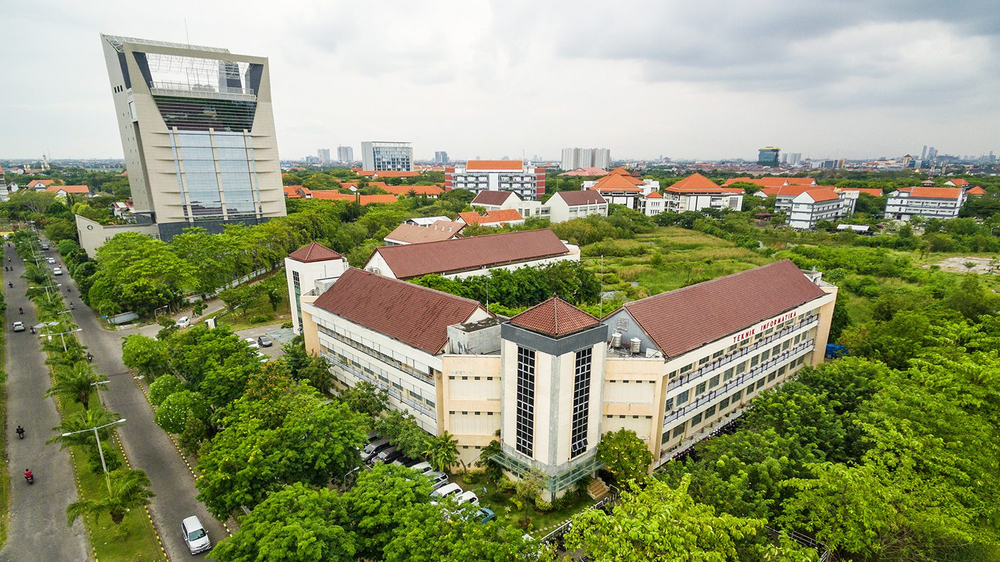

Academic Journey
Education
2023 — Present
Bachelor of Computer Engineering
Institut Teknologi Sepuluh Nopember
Focusing on Digital Systems, Microprocessors, and Hardware-Software Integration. Actively contributing to the laboratory research ecosystem.

2020 — 2023
High School Diploma (Science)
SMAN 2 Kota Tangerang Selatan
Developed foundational critical thinking skills and participated in technical extracurriculars.